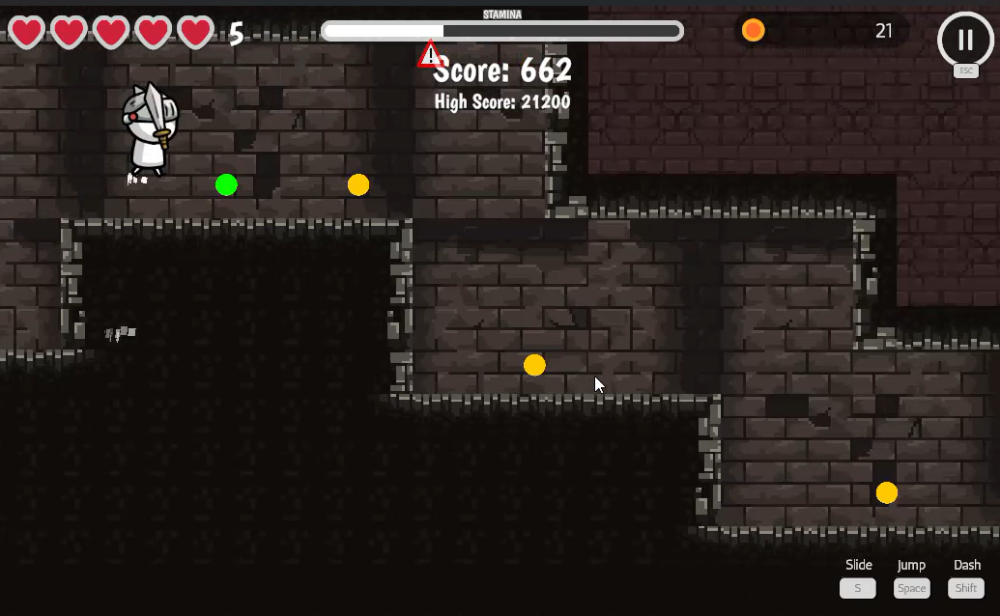
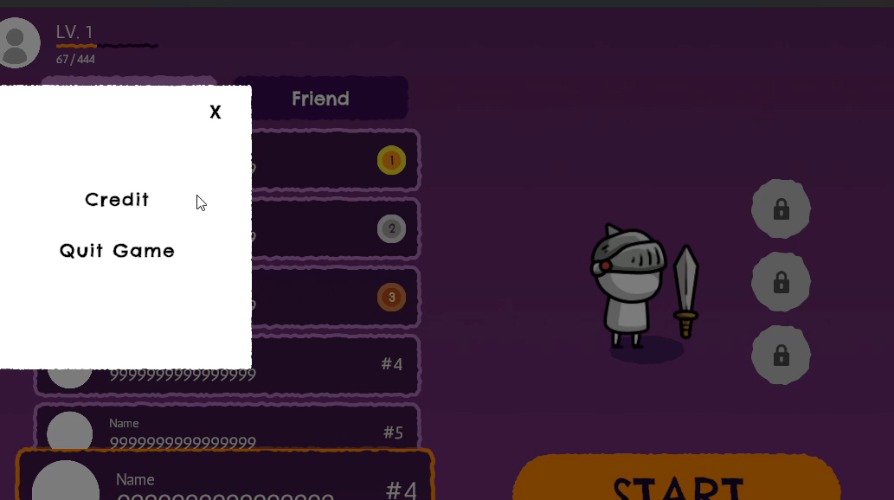

A live service side scroller game using infinite world generation to give an endless game.
Getting a live service game to run, as well with getting the data, was tough and took time, although regularly checking in with teachers helped keep the team going.

